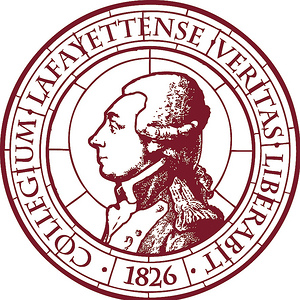

Speech & Data Scientist
Nuance Communications Inc.
January 2018, May 2018 - August 2018 (4 Months) | Mahwah, NJ.
Developed speech and grammar recognition software by analyzing call trends and optimizing
grammars to accept variations of user inputs. Created scripts in Python to parse over 1 million unique
audio logs for data collection. Made recommendations and collaborated with team members to
optimize automated phone systems for customers. Worked heavily in Excel, Python, Java, and
ParseTool.
Software Engineer & 3D Modeling Design Intern
Nuance Communications Inc.
May 2017 - August 2017 (4 Months) | Mahwah, NJ.
Worked on two high priority projects to attract new customers and improve internal collaboration.
Utilized Java, XML, JavaScript, and a stationary phone to map and set up an Interactive Voice
Response (IVR) system that would be used to demonstrate Nuance’s tools to possible customers.
Researched, 3D modeled, and designed a collaboration area for the office to encourage individuals to
work together.

Associate Software Engineer
Polimeni Medical Information Technologies
June 2016 - August 2016 (3 Months) | Oradell, NJ.
Worked on the database end of an application. Self-taught to utilize Scala, transfer and parse XML files
into JSON format, utilization of AKKA and basic Play Framework. Parsed patient file templates and
organized them in the created database.

Computer Science Tutor
Lafayette College
February 2016 - Present | Easton, PA.
Supported students who needed help in Computer Science gaming, data structures, and theory courses.
Helped with basic scripting, data parsing, game asset management, and algorithm development and
complexity. Adjusted my schedule to find times during the week and on the weekends to help students.